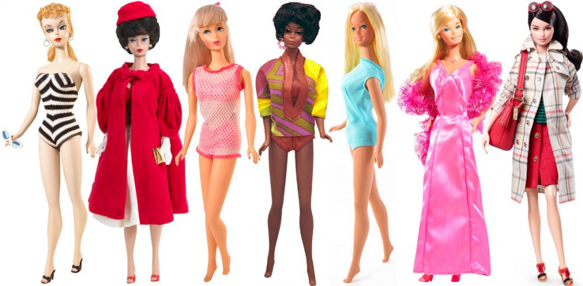
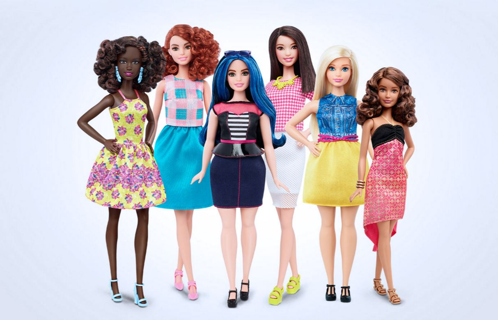
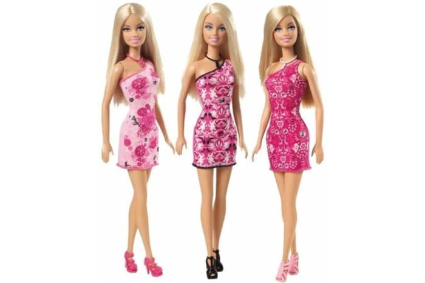

BARBIE EVOLUTION
BODY AND RACE
Barbie has changed so much. When I was younger, all you could find were the skinny blond dolls. Now you can find all bodytypes, skintones, dolls with disabilities, even dolls based off of powerful women! They have become so much more inclusive and are giving young girls a better understanding and image of women. They promote realistic body images and make everygirl feel special.
For Barbie’s 60th Anniversary they introduced a new line of dolls called the Role Model Collection. It consists of a range of powerful and inspirational women who children can look up too. There are a range of careers as well from journalist, sports stars, activists, artists and designers, scientists, movie stars, and much more. There are all women who are, well, role models.

FEELING
When I used to play with barbie dolls in the early 2000’s, most of the dolls were very skinny, white, and blond. They dolls were so skinny that their necks and waists were almost the same size. This gave little girls an unrealistic expectation of what they were supposed to look like. Also, it was so hard to find dolls with different skin tones which made me feel out of place. All of my friends had dolls that looked like them, but I didn’t. I felt like I was “wrong”. Now they have created dolls of different races and dolls with disabilities which makes almost all girls feel included.
